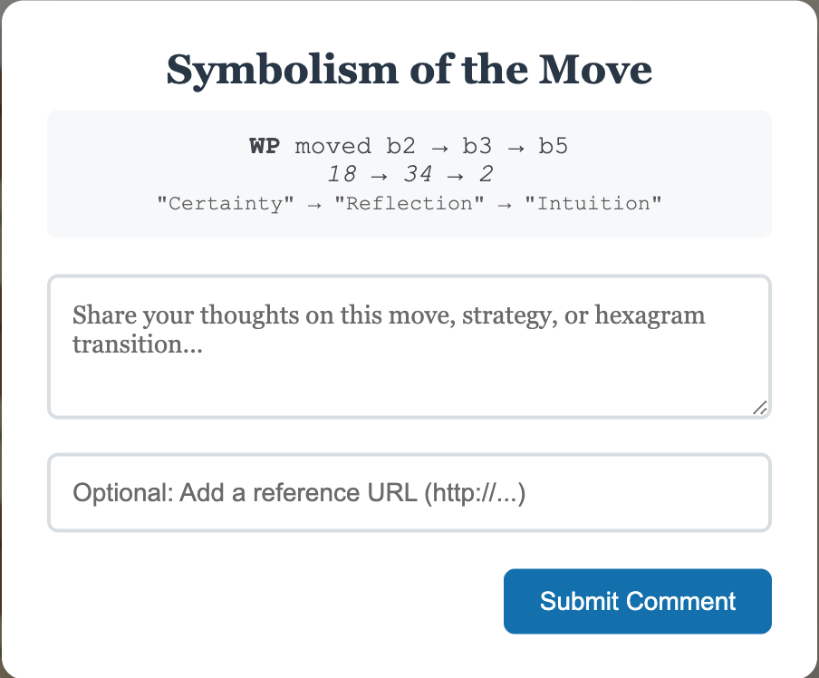

Understanding the Game
Page 2 of 3
Symbolism of the Move
After each move, you'll be prompted to write a short reflection inspired by the hexagram keywords your piece touched. These are called the Symbolism of the Move and often begin with phrases like:
"This reminds me of…"
"I see similarities between…"
"Sometimes I marvel that…"
Your reflections are entirely subjective —
meant to capture your personal insight.
You can also include links or images that expand on your idea.
You can use the Reference link to find inspiration.
